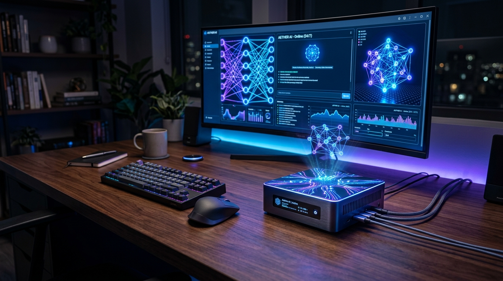
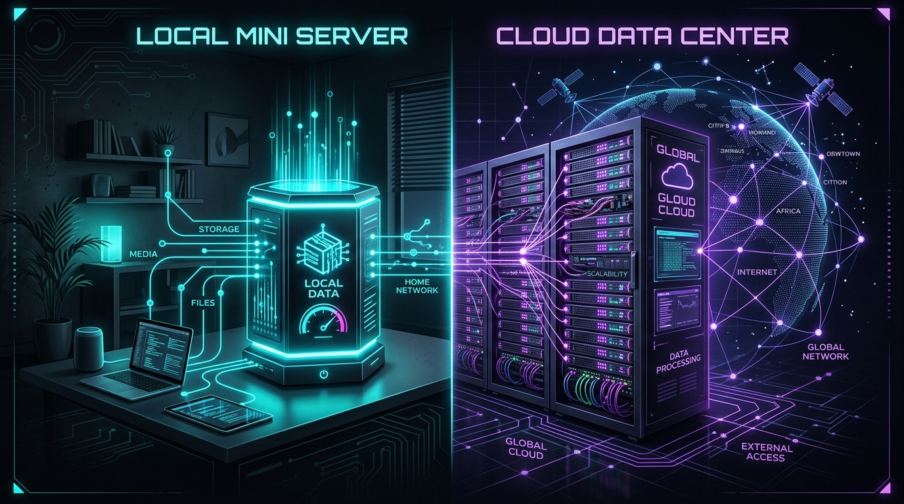
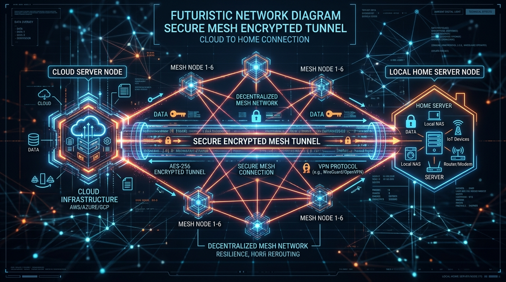

Představte si asistenta, který pro vás pracuje nepřetržitě 24 hodin denně, 7 dní v týdnu. Zatímco spíte, zpracovává rešerše, hlídá důležité aktualizace, řídí plánované úlohy, spravuje notifikace a reaguje na vaše požadavky. Aby však takový autonomní AI asistent mohl spolehlivě fungovat bez neustálých výpadků, potřebuje správně dimenzovanou infrastrukturu.

Při návrhu architektonického řešení narazíte na dvě základní filosofie: provozovat vlastního asistenta doma na mini serveru, nebo využít cloudové VPS (Virtual Private Server).
V tomto článku si detailně rozbereme klíčové oblasti – od důvodů pro 24/7 provoz až po pokročilou hybridní architekturu, která propojuje to nejlepší z obou světů.
1. Úvod: Od jednorázového chatu k neustále běžícímu agentovi
Většina uživatelů dnes používá generativní umělou inteligenci reaktivně – otevřou webové rozhraní (např. ChatGPT nebo Google Gemini), napíší dotaz, přečtou si odpověď a okno zavřou.
Skutečný posun v produktivitě ale nastává ve chvíli, kdy přeorientujete svůj model fungování z pasivního chatu na autonomního agenta:
- Proaktivní monitoring a notifikace: Asistent nemusí čekat na váš impuls. Samostatně kontroluje API rozhraní, e-mailové schránky, kalendáře nebo stav vašich systémů a odesílá vám souhrnné zprávy přes Telegram či Signal v momentě, kdy se stane něco důležitého.
- Asynchronní plnění dlouhotrvajících úloh: Místo toho, abyste sledovali načítací indikátor při generování rozsáhlých rešerší nebo analýze dat, zadáte úkol a asistent vás informuje o dokončení.
- Nepřetržitý běh plánovaných skriptů (Cron / Timery): Noční zálohy, agregace zpráv z RSS kanálů, pravidelné generování reportů nebo údržba databáze probíhají bez nutnosti mít zapnutý váš pracovní notebook.
Aby tato mechanika fungovala 24 hodin denně 7 dní v týdnu, musíte vyřešit kardinální otázku: Kde bude srdce vašeho AI asistenta fyzicky běžet?
2. Domácí mini server: Absolutní soukromí, vysoký lokální výkon a plná kontrola
Provoz na vlastním hardwaru (tzv. Homelab) představuje volbu pro ty, kteří vyžadují nekompromisní ochranu soukromí a chtějí vytěžit maximum z otevřených lokálních modelů.
Hardwarové možnosti pro rok 2026:
- Ekonomický základ (Intel N100 / N97 / N305 Mini PC): Spotřeba pouhých 6 až 15 W v zátěži (provoz stojí cca 30–80 Kč měsíčně). Perfektní pro běh Docker kontejnerů, řídicí logiky v Pythonu/Node.js, databází a lehčích úloh.
- Výkonný standard pro lokální AI (Apple Mac Mini M-Series / M4): Unifikovaná paměť RAM (24 GB nebo 48 GB) s propustností přes 150 GB/s dokáže plynule spouštět lokální 8B až 32B modely (Llama 3, Qwen, Mistral) přes rozhraní Ollama nebo LM Studio rychlostí 30–60 tokenů za sekundu.
- NVIDIA Dedicated GPU Rig: Počítač vybavený kartami jako RTX 3090 / 4090 (24 GB VRAM). Nabízí maximální rychlost inference, avšak za cenu vyšší spotřeby v idle stavu (30–60 W) a hlučnosti.
Hlavní výhody domácího serveru:
- 100% soukromí a datová suverenita: Vaše osobní soubory, privátní API klíče a konverzace nikdy neopustí vaši místní síť.
- Nulové poplatky za tokeny: Při spouštění lokálních LLM neplatíte žádnému poskytovateli za tisíce přenesených tokenů.
- Široká multifunkčnost: Mini server zvládá zároveň spouštět Home Assistant pro chytrou domácnost, lokální NAS či Pi-hole.
Rizika a úskalí:
- Výpadky infrastruktury: Výpadek proudu nebo internetu doma znamená, že váš asistent přestane reagovat.
- Složitější vzdálený přístup: K přístupu na domácí server na cestách potřebujete bezpečně nastavené tunelování.
3. Cloudové VPS: Giga-stabilita 99,9 %, veřejná IP a zero-maintenance
Pokud se nechcete starat o hardware, prach, chlazení a výpadky domácího připojení, cloudové virtuální servery (VPS) nabízejí profesionální prostředí dostupné za pár minut.
Typičtí poskytovatelé: Hetzner Cloud, DigitalOcean, Linode nebo český VPS Free za cca 4 € až 10 € měsíčně (cca 100–250 Kč/měsíc).
Na levném VPS obvykle neběží samotný obří LLM model, ale slouží jako mozek řídicí logiky, který směruje dotazy přes API na cloudové modely (Google Gemini API, Claude API, OpenAI API).

4. Přehledné srovnání (Tabulka parametrů)
| Kritérium / Parametr | Domácí Mini Server (Intel N100 / Mac Mini) | Cloudové VPS (např. Hetzner) |
|---|---|---|
| Spolehlivost (Uptime) | 95–98 % (závisí na domácí síti) | 99,9 %+ (Datacentrum) |
| Ochrana soukromí | 100 % lokální (data doma) | Data uložena u cloudového poskytovatele |
| Běh lokálních LLM (Ollama) | Vynikající (s Mac Mini / GPU) | Velmi pomalý (chybí GPU) |
| Využití Cloudových API | Možné přes domácí přípojku | Bleskové (páteřní síť) |
| Počáteční investice | 5 000 – 30 000 Kč | 0 Kč |
| Měsíční provozní náklady | Jen elektřina (~40–150 Kč) | Paušál (~100–300 Kč + API) |
| Veřejná IP a Webhooky | Nutno řešit VPN / Tailscale | Nativní veřejná IP |
5. Šalamounské řešení: Hybridní model (VPS + Domácí server přes Tailscale)
Dostáváme se k nejsilnějšímu architektonickému vzoru, který kombinuje výhody obou světů:

[ Uživatel / Telegram / Webhook ]
│
▼
┌──────────────────────────────┐
│ Cloudové VPS (Hetzner) │ <-- Běží 24/7, má veřejnou IP,
│ (Veřejná brána a router) │ přijímá zprávy a webhooky
└──────────────┬───────────────┘
│ (Šifrovaný tunel přes Tailscale Mesh VPN)
▼
┌──────────────────────────────┐
│ Domácí Mini Server / Mac │ <-- Běží lokální LLM (Ollama),
│ (Těžký dělník & Soukromí) │ má přístup k lokálním datům
└──────────────┬───────────────┘- VPS v cloudu jako „Brána 24/7“: Přijímá všechny zprávy z Telegramu, e-mailů či webhooků. Zajišťuje 100% dostupnost.
- Domácí server jako „Dělník“: Řeší těžké lokální LLM modely (Ollama) a má přístup k soukromým datům.
- Propojení přes Tailscale: Šifrovaná Mesh VPN propojuje obě zařízení bez otevírání portů na routeru.
- Automatický Fallback: Při výpadku domácí sítě VPS přesměruje dotazy na cloudové API (Google Gemini API).
6. Rozhodovací matice: Co je nejlepší volbou právě pro vás?
| Vaše situace / Priorita | Doporučená architektura | Hlavní důvod |
|---|---|---|
| „Chci to mít co nejrychleji bez HW starostí“ | Cloudové VPS | Spuštěno za 10 minut s 99,9% uptime a veřejnou IP. |
| „Moje data nesmí opustit dům“ | Domácí Mini Server | Plná kontrola nad daty i lokálními AI modely (Ollama). |
| „Chci spouštět lokální 8B–32B LLM na max“ | Mac Mini M-series | Unifikovaná RAM nabízející nejlepší poměr cena/výkon. |
| „Chci 100% dostupnost botů + sílu domácího HW“ | Hybridní model (VPS + Tailscale) | VPS zajistí 24/7 příjem a fallback, domácí PC výpočty. |
Shrnutí a závěr článku
Přechod od občasného chatování k osobnímu AI asistentovi běžícímu 24/7 je obrovským skokem v produktivitě. Pokud s vývojem začínáte, doporučujeme zvolit cloudové VPS s využitím Gemini API. Jakmile vzrostou vaše nároky na soukromí a objem dat, rozšíření o domácí server a propojení přes Tailscale vám poskytne ideální zázemí bez kompromisů.
💬 Zapojte se do diskuse!
Jaké řešení používáte vy? Běží váš AI asistent v cloudu, nebo nedáte dopustit na vlastní domácí homelab? Podělte se o své zkušenosti v komunitní diskusi!